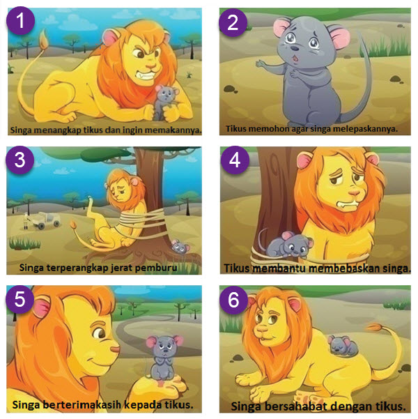

D. MEMERANKAN ISI FABEL
Cici dan Serigala
Karya Lilik Choir
Sore itu tiga kelinci kecil, Cici, Pusi, dan Upi bermain bersama di tempat lapang di hutan. Tiba-tiba Cici melihat sesuatu tergeletak dalam bungkus plastik.
“Hai Teman-teman… lihatlah! Cici berteriak sambil menunjuk ke arah bungkusan plastik. “Wah… makanan teman-teman..” teriak Upi.
“Asyik… sore ini kita makan enak..” Pusi bersorak kegirangan. Cici mengambil kue itu, membuka bungkusnya dan tercium aroma harum dari kue itu. Tiba-tiba muncul niat liciknya.
“Ah… kue ini pasti nikmat sekali apalagi jika ku makan sendiri tanpa berbagi dengan mereka”. Gumamnya dalam hati.
“Teman-teman sepertinya kue ini bekal pak tukang kayu yang sering ke hutan ini, mungkin dia baru saja kesini dan belum pergi terlalu jauh. bagaimana jika kususullkan kue ini, bukankah menolong orang juga perbuatan mulia? Cici meyakinkan temannya.
Raut kecewa tergambar di wajah Upi dan Pusi, mereka gagal makan kue yang beraroma lezat itu. Cici berlari menjauhi temannya dan memakan kue itu sendiri. Tiba-tiba...
Bruukk..!!
“Aaahhgg… tolooong…” Cici menjerit keras. Seekor serigala muncul dari balik semak dan langsung menerkam tubuh mungil Cici. Cici pun menangis dan terus berteriak minta tolong.
“Cici pun memutar otak mencari cara bagaimana agar ia bisa bebas dari cengkeraman serigala itu. Akhirnya ia mendapatkan ide.
“Pak serigala, aku punya dua teman di sana. Bagaimana jika mereka ku jemput ke sini supaya kamu dapat makan lebih banyak lagi”. Cici berusaha mengelabui serigala itu.
“Baiklah, segera panggil mereka tapi aku harus ikut di belakangmu.” Jawab serigala.
“Pelan-pelan saja ya, jalanmu supaya mereka tidak mendengar langkah kakimu. Aku khawatir mereka akan lari ketakutan.”
Cici pun berlari ke arah teman-temannya yang ditinggalkan tadi. Sementara serigala mengikutinya dengan langkah pelan. Menyadari hal itu Cici berlari sekuat tenaga sambil sesekali memanggil temannya.
“Ups…!”, kaki Cici tiba-tiba terasa ada yang menarik. Ia pun menjerit dan bahkan tidak berani membuka mata.
“Jangan Pak Serigala… jangan makan aku, ampuni aku..”
“Sst…, ini aku Ci, bukalah matamu, ini Upi dan Pusi..”
“Ayo cepat Ci…” dengan rasa kebersamaan mereka pun akhirnya selamat.
Napas mereka tersengal-sengal, keringatnya bercucuran. Cici menangis tesedu-sedu.
“Hik.. hik.. maafkan aku teman-teman, aku bersalah pada kalian. Aku telah berbohong..” Cici akhirnya menceritakan kejadian yang sebenarnya. Temannya tidak marah apalagi membencinya. Cici pun berjanji tidak akan mengulanginya lagi.
“Sudahlah Cici… kami memaafkanmu…” kata Pusi dengan bijak.
“Terimak sih kawan, aku janji tidak akan mengulanginya lagi..” jawab Cici dengan tulus.
